#1144: [OR] Patch 12/01/20 cur. hosp numbers
Issue number 1144
hmhoffman opened this issue on April 6, 2021, 10:24 AM PDT
State: OR
Dates affected: 12/01/20 (OR was later put on a one day lag)
Describe the issue: On November 30, 2020, Oregon did not update their data dashboard until after the time of our daily update, but did provide a press release with data. We sourced their Positive Cases (People, confirmed + probable), Currently hospitalized, Currently in ICU, Deaths (confirmed and probable) from this press release. We later learned that the hospitalization figures from the press releases are different from the numbers we usually captured, and are backfilling their Currently hospitalized, Currently in ICU, and Currently on ventilator from screenshots.
Screenshot links: https://covid-tracking-project-data.s3.us-east-1.amazonaws.com/state_screenshots/OR/OR-quaternary-20201201-054743.png
Comments
#1144: [OR] Patch 12/01/20 cur. hosp numbers
Issue number 1144
hmhoffman opened this issue on April 6, 2021, 10:24 AM PDT
State: OR
Dates affected: 12/01/20 (OR was later put on a one day lag)
Describe the issue: On November 30, 2020, Oregon did not update their data dashboard until after the time of our daily update, but did provide a press release with data. We sourced their Positive Cases (People, confirmed + probable), Currently hospitalized, Currently in ICU, Deaths (confirmed and probable) from this press release. We later learned that the hospitalization figures from the press releases are different from the numbers we usually captured, and are backfilling their Currently hospitalized, Currently in ICU, and Currently on ventilator from screenshots.
Screenshot links: https://covid-tracking-project-data.s3.us-east-1.amazonaws.com/state_screenshots/OR/OR-quaternary-20201201-054743.png
Comments
Rows edited: 1 OR 2020-12-01 hospitalizedCurrently: 662 (was 584) inIcuCurrently: 127 (was 117) onVentilatorCurrently: 58 (was 50)
#1142: [OR] Correct 10/31/20 Cases (confirmed + probable)
Issue number 1142
hmhoffman opened this issue on April 6, 2021, 9:56 AM PDT
State: OR
Dates affected: 10/31/20 (OR was later put on a one-day lag)
Describe the issue: On October 30, 2020, we recorded Oregon's Cases (confirmed + probable) as 44389, per the state page. On October 31, the state changed this number to 44388. We are updating our timeseries as well to ensure that our data matches the states as closely as possible.
Screenshot links: https://covid-tracking-project-data.s3.us-east-1.amazonaws.com/state_screenshots/OR/OR-20201031-004125.png https://covid-tracking-project-data.s3.us-east-1.amazonaws.com/state_screenshots/OR/OR-20201030-184109.png
Comments
Rows edited: 1 OR 2020-10-31 positive: 44388 (was 44389)
#1142: [OR] Correct 10/31/20 Cases (confirmed + probable)
Issue number 1142
hmhoffman opened this issue on April 6, 2021, 9:56 AM PDT
State: OR
Dates affected: 10/31/20 (OR was later put on a one-day lag)
Describe the issue: On October 30, 2020, we recorded Oregon's Cases (confirmed + probable) as 44389, per the state page. On October 31, the state changed this number to 44388. We are updating our timeseries as well to ensure that our data matches the states as closely as possible.
Screenshot links: https://covid-tracking-project-data.s3.us-east-1.amazonaws.com/state_screenshots/OR/OR-20201031-004125.png https://covid-tracking-project-data.s3.us-east-1.amazonaws.com/state_screenshots/OR/OR-20201030-184109.png
Comments
Rows edited: 1 OR 2020-10-31 positive: 44388 (was 44389)
#1116: [OR] Patch 02/28/21 error
Issue number 1116
hmhoffman opened this issue on March 1, 2021, 3:03 PM PST
State: OR
Dates affected: 02/28/21
Describe the issue: On February 28, 2021, we accidentally caught the data meant for Oregon's March 1, 2021 update. Oregon's data is on a one-day lag in our timeseries due to consistently updating after 7:30 pm est, when we publish our daily update.
Comments
Rows edited: 1 OR 2021-02-28 positive: 155315 (was 155597) lastUpdateTime: 2021-02-27 08:01:00+00:00 (was 2021-02-26 08:01:00+00:00)
#1116: [OR] Patch 02/28/21 error
Issue number 1116
hmhoffman opened this issue on March 1, 2021, 3:03 PM PST
State: OR
Dates affected: 02/28/21
Describe the issue: On February 28, 2021, we accidentally caught the data meant for Oregon's March 1, 2021 update. Oregon's data is on a one-day lag in our timeseries due to consistently updating after 7:30 pm est, when we publish our daily update.
Comments
Rows edited: 1 OR 2021-02-28 positive: 155315 (was 155597) lastUpdateTime: 2021-02-27 08:01:00+00:00 (was 2021-02-26 08:01:00+00:00)
#1098: [OR] Patch 02/11/21 data
Issue number 1098
hmhoffman opened this issue on February 12, 2021, 2:01 PM PST
State: OR
Dates affected: 02/11/21
Describe the issue: On February 11, 2021, we accidentally caught the data meant for Oregon's February 12, 2021 update. Oregon's data is on a one-day lag in our timeseries due to consistently updating after 7:30 pm est, when we publish our daily update.
Comments
Rows edited: 1 OR 2021-02-11 positive: 148475 (was 149082) death: 2044 (was 2056) totalTestsViral: 3344227 (was 3364377) positiveTestsViral: 195355 (was 196002) negativeTestsViral: 3148872 (was 3168375)
#1098: [OR] Patch 02/11/21 data
Issue number 1098
hmhoffman opened this issue on February 12, 2021, 2:01 PM PST
State: OR
Dates affected: 02/11/21
Describe the issue: On February 11, 2021, we accidentally caught the data meant for Oregon's February 12, 2021 update. Oregon's data is on a one-day lag in our timeseries due to consistently updating after 7:30 pm est, when we publish our daily update.
Comments
Rows edited: 1 OR 2021-02-11 positive: 148475 (was 149082) death: 2044 (was 2056) totalTestsViral: 3344227 (was 3364377) positiveTestsViral: 195355 (was 196002) negativeTestsViral: 3148872 (was 3168375)
#1092: [OR] Patch OR 02/08/21 update
Issue number 1092
hmhoffman opened this issue on February 8, 2021, 3:18 PM PST
State: OR
Dates affected: 02/07/21
Describe the issue: On February 7, 2021, we accidentally caught the data meant for Oregon's February 8, 2021 update. Oregon's data is on a one-day lag in our timeseries due to consistently updating after 7:30 pm est, when we publish our daily update.
Comments
Rows edited: 1 OR 2021-02-07 positive: 146741 (was 147122) death: 2019 (was 2023)
#1092: [OR] Patch OR 02/08/21 update
Issue number 1092
hmhoffman opened this issue on February 8, 2021, 3:18 PM PST
State: OR
Dates affected: 02/07/21
Describe the issue: On February 7, 2021, we accidentally caught the data meant for Oregon's February 8, 2021 update. Oregon's data is on a one-day lag in our timeseries due to consistently updating after 7:30 pm est, when we publish our daily update.
Comments
Rows edited: 1 OR 2021-02-07 positive: 146741 (was 147122) death: 2019 (was 2023)
#1091: [OR] Delete history of confirmed and probable cases
Issue number 1091
karaschechtman opened this issue on February 8, 2021, 9:10 AM PST
Labels Data quality
State or US: OR
Describe the problem We used to get confirmed cases in OR by using their positive people tested number and probably by subtracting that number from lumped. However, this number included people tested by antigen, it was never really confirmed. We should clear the history of this field.
Link to data source Provide links to original data sources that we can refer to, like a state COVID website.
Comments
#1091: [OR] Delete history of confirmed and probable cases
Issue number 1091
karaschechtman opened this issue on February 8, 2021, 9:10 AM PST
Labels Data quality
State or US: OR
Describe the problem We used to get confirmed cases in OR by using their positive people tested number and probably by subtracting that number from lumped. However, this number included people tested by antigen, it was never really confirmed. We should clear the history of this field.
Link to data source Provide links to original data sources that we can refer to, like a state COVID website.
Comments
#1082: Removing values from the API field Negative from AK, CA, DC, GA, KY, NY, OH, OR, TX, VA and WA
Issue number 1082
jaclyde opened this issue on January 27, 2021, 3:13 PM PST
Labels Data quality
States: Alaska, California, Washington DC, Georgia, Kentucky, New York, Ohio, Oregon, Texas, Virginia, Washington
Issue: We are removing negatives that were created from mixed units (specimens minus cases or test encounters minus cases) for states that are using explicit totals in our main total test results field (called totalTestResults in the API). See the Data FAQ for additional explanation.
Comments
Alaska: Never reported negatives directly and always reported in specimens, removing total time series
Values Removed: Changes.txt
California: Never reported negatives directly, but did report in Total tests (people) until April 21, 2020. Removing time series from present to April 22, 2020.
Values Removed: Changes.txt
Washington DC: Never reported negatives directly, and has always reported encounters, removing total time series
Values Removed: Changes.txt
Georgia: Never reported negatives directly and always reported in specimens, removing total time series
Values Removed: Changes.txt
Kentucky: Never reported negatives directly and always reported in specimens, removing total time series
Values Removed: Changes.txt
New York: Never reported negatives directly and always reported in encounters, removing total time series
Values Removed: Changes.txt
Ohio: Never reported negatives directly and always reported in specimens, removing total time series
Values Removed: Changes.txt
Oregon: Never reported negatives directly, but did report in Total tests (people) until December 1, 2020. Removing time series from present to December 2, 2020.
Values Removed: Changes.txt
Texas: Never reported negatives directly and always reported in specimens, removing total time series
Values Removed: Changes.txt
Virginia: Never reported negatives directly and always reported in encounters, removing total time series
Values Removed: Changes.txt
Washington: Negatives were backfilled with values calculated from total tests (encounters)-confirmed cases in August 2020. Removing total time series.
Values Removed: Changes.txt
#1082: Removing values from the API field Negative from AK, CA, DC, GA, KY, NY, OH, OR, TX, VA and WA
Issue number 1082
jaclyde opened this issue on January 27, 2021, 3:13 PM PST
Labels Data quality
States: Alaska, California, Washington DC, Georgia, Kentucky, New York, Ohio, Oregon, Texas, Virginia, Washington
Issue: We are removing negatives that were created from mixed units (specimens minus cases or test encounters minus cases) for states that are using explicit totals in our main total test results field (called totalTestResults in the API). See the Data FAQ for additional explanation.
Comments
Alaska: Never reported negatives directly and always reported in specimens, removing total time series
Values Removed: Changes.txt
California: Never reported negatives directly, but did report in Total tests (people) until April 21, 2020. Removing time series from present to April 22, 2020.
Values Removed: Changes.txt
Washington DC: Never reported negatives directly, and has always reported encounters, removing total time series
Values Removed: Changes.txt
Georgia: Never reported negatives directly and always reported in specimens, removing total time series
Values Removed: Changes.txt
Kentucky: Never reported negatives directly and always reported in specimens, removing total time series
Values Removed: Changes.txt
New York: Never reported negatives directly and always reported in encounters, removing total time series
Values Removed: Changes.txt
Ohio: Never reported negatives directly and always reported in specimens, removing total time series
Values Removed: Changes.txt
Oregon: Never reported negatives directly, but did report in Total tests (people) until December 1, 2020. Removing time series from present to December 2, 2020.
Values Removed: Changes.txt
Texas: Never reported negatives directly and always reported in specimens, removing total time series
Values Removed: Changes.txt
Virginia: Never reported negatives directly and always reported in encounters, removing total time series
Values Removed: Changes.txt
Washington: Negatives were backfilled with values calculated from total tests (encounters)-confirmed cases in August 2020. Removing total time series.
Values Removed: Changes.txt
#1077: [OR] Patch 01/21/21 data
Issue number 1077
hmhoffman opened this issue on January 22, 2021, 2:45 PM PST
State: OR
Dates affected: 01/21/21
Describe the issue: On January 21, 2021, we accidentally caught the next days data for Oregon's data. Orgeon's data is on a one-day lag in our timeseries due to consistently updating after 7:30 pm est, when we publish our daily update. On January 21, 2021, they published data abnormally early and we mistakenly caught the data meant for January 22, 2021 in our data for January 21, 2021.
Comments
Rows edited: 1 OR 2021-01-21 positive: 135142 (was 135973) negative: 2868071 (was 2887359) hospitalizedCurrently: 387 (was 365) inIcuCurrently: 96 (was 91) death: 1832 (was 1843) totalTestsViral: 3003213 (was 3023332) positiveTestsViral: 179384 (was 180336) negativeTestsViral: 2823829 (was 2842996)
#1077: [OR] Patch 01/21/21 data
Issue number 1077
hmhoffman opened this issue on January 22, 2021, 2:45 PM PST
State: OR
Dates affected: 01/21/21
Describe the issue: On January 21, 2021, we accidentally caught the next days data for Oregon's data. Orgeon's data is on a one-day lag in our timeseries due to consistently updating after 7:30 pm est, when we publish our daily update. On January 21, 2021, they published data abnormally early and we mistakenly caught the data meant for January 22, 2021 in our data for January 21, 2021.
Comments
Rows edited: 1 OR 2021-01-21 positive: 135142 (was 135973) negative: 2868071 (was 2887359) hospitalizedCurrently: 387 (was 365) inIcuCurrently: 96 (was 91) death: 1832 (was 1843) totalTestsViral: 3003213 (was 3023332) positiveTestsViral: 179384 (was 180336) negativeTestsViral: 2823829 (was 2842996)
#1071: [OR] Remove values carried over after Oregon stopped reporting Recovered on 10/09/2020
Issue number 1071
jaclyde opened this issue on January 19, 2021, 3:56 PM PST
Labels Data quality
State: Oregon
Issue: On October 9, 2020, Oregon announced they were removing the Recovered metric from their reporting and working on a revised definition of recovered. We carried over the last available value, as that was our policy at the time, however the value is out of date and potentially confusing. We will be keeping the time series as provided by the state, but removing the carried over values from October 9, 2020, forward.
Comments
- [x] make GH issue
- [x] double check the metrics aren't being reported somewhere by the state
- [x] remove carried over values
- [x] null out source notes
- [x] null out WS2 values
add chart annotationno chart annotation added because we don't have a chart with this metric - [x] add public note
Values removed: Changes.txt
#1071: [OR] Remove values carried over after Oregon stopped reporting Recovered on 10/09/2020
Issue number 1071
jaclyde opened this issue on January 19, 2021, 3:56 PM PST
Labels Data quality
State: Oregon
Issue: On October 9, 2020, Oregon announced they were removing the Recovered metric from their reporting and working on a revised definition of recovered. We carried over the last available value, as that was our policy at the time, however the value is out of date and potentially confusing. We will be keeping the time series as provided by the state, but removing the carried over values from October 9, 2020, forward.
Comments
- [x] make GH issue
- [x] double check the metrics aren't being reported somewhere by the state
- [x] remove carried over values
- [x] null out source notes
- [x] null out WS2 values
add chart annotationno chart annotation added because we don't have a chart with this metric - [x] add public note
Values removed: Changes.txt
#1070: [OR] Correct 01/18 error
Issue number 1070
hmhoffman opened this issue on January 19, 2021, 1:29 PM PST
State: OR
Dates affected: 01/18
Describe the issue: On January 18, 2021, we accidentally caught the next days data for Oregon's Cases (confirmed + probable) and Deaths (confirmed + probable). Orgeon's data is on a one-day lag in our timeseries due to consistently updating after 7:30 pm est, when we publish our daily update. On January 18, 2021, they published data abnormally early and we mistakenly caught the data meant for January 19, 2021 in our data for January 18, 2021.
Comments
Rows edited: 1 OR 2021-01-18 positive: 133205 (was 133851) death: 1800 (was 1803)
#1070: [OR] Correct 01/18 error
Issue number 1070
hmhoffman opened this issue on January 19, 2021, 1:29 PM PST
State: OR
Dates affected: 01/18
Describe the issue: On January 18, 2021, we accidentally caught the next days data for Oregon's Cases (confirmed + probable) and Deaths (confirmed + probable). Orgeon's data is on a one-day lag in our timeseries due to consistently updating after 7:30 pm est, when we publish our daily update. On January 18, 2021, they published data abnormally early and we mistakenly caught the data meant for January 19, 2021 in our data for January 18, 2021.
Comments
Rows edited: 1 OR 2021-01-18 positive: 133205 (was 133851) death: 1800 (was 1803)
#1063: [OR] Move time series to a 1-day lag from the state (i.e., morning/noon EST) for consistency in reporting
Issue number 1063
space-buzzer opened this issue on January 13, 2021, 10:07 AM PST
Labels Data quality
Target Date: Entire time series Overview: OR reports their daily numbers very later, which means that if we want to be on their schedule we need to backfill it daily (either in the evening or the following day). This is inconvenient and error-prone
We're moving their time series 1 day back in our dating and reporting. The actual date the state updates the data does not change, and remains in lastUpdatedAt field.
No metrics and no values are changing due to this update
Comments
Done in batch #764
#1063: [OR] Move time series to a 1-day lag from the state (i.e., morning/noon EST) for consistency in reporting
Issue number 1063
space-buzzer opened this issue on January 13, 2021, 10:07 AM PST
Labels Data quality
Target Date: Entire time series Overview: OR reports their daily numbers very later, which means that if we want to be on their schedule we need to backfill it daily (either in the evening or the following day). This is inconvenient and error-prone
We're moving their time series 1 day back in our dating and reporting. The actual date the state updates the data does not change, and remains in lastUpdatedAt field.
No metrics and no values are changing due to this update
Comments
Done in batch #764
#1052: [OR] Patch 01/06 late update
Issue number 1052
hmhoffman opened this issue on January 7, 2021, 9:45 AM PST
Labels not stale
State: OR
Dates affected: 01/06
Describe the issue: On January 6, 2021, Oregon updated their COVID-19 data after the time of our daily update.
Comments
This issue has been automatically marked as stale because it has not had recent activity. It will be closed if no further activity occurs. Thank you for your contributions!
This issue has been closed because it was stale for 15 days, and there was no further activity on it for 10 days. You can feel free to re-open it if the issue is important, and label it as "not stale."
Patched on 01/07/21: Changes (7).txt
#1052: [OR] Patch 01/06 late update
Issue number 1052
hmhoffman opened this issue on January 7, 2021, 9:45 AM PST
Labels not stale
State: OR
Dates affected: 01/06
Describe the issue: On January 6, 2021, Oregon updated their COVID-19 data after the time of our daily update.
Comments
This issue has been automatically marked as stale because it has not had recent activity. It will be closed if no further activity occurs. Thank you for your contributions!
This issue has been closed because it was stale for 15 days, and there was no further activity on it for 10 days. You can feel free to re-open it if the issue is important, and label it as "not stale."
Patched on 01/07/21: Changes (7).txt
#1048: [OR] Patch 01/04 current hospitalization metrics
Issue number 1048
hmhoffman opened this issue on January 6, 2021, 7:58 AM PST
State: OR
Dates affected: 01/04
Describe the issue: On January 4, 2021, Oregon did not update their data dashboard until after the time of our daily update.
Comments
Rows edited: 1 OR 2021-01-04 hospitalizedCurrently: 520 (was 524) inIcuCurrently: 107 (was 119) onVentilatorCurrently: 55 (was 60)
#1048: [OR] Patch 01/04 current hospitalization metrics
Issue number 1048
hmhoffman opened this issue on January 6, 2021, 7:58 AM PST
State: OR
Dates affected: 01/04
Describe the issue: On January 4, 2021, Oregon did not update their data dashboard until after the time of our daily update.
Comments
Rows edited: 1 OR 2021-01-04 hospitalizedCurrently: 520 (was 524) inIcuCurrently: 107 (was 119) onVentilatorCurrently: 55 (was 60)
#1047: [OR] Correct changed case number 01/04
Issue number 1047
hmhoffman opened this issue on January 6, 2021, 7:52 AM PST
State: OR
Dates affected: 01/04
Describe the issue: On January 4, 2021, Oregon revised the Total cases number on their website from 118456 to 118453. In order to ensure that our data is as consistent with Oregon's as possible, we are patching this metric in our timeseries.
Comments
Rows edited: 1 OR 2021-01-04 positive: 118453 (was 118456)
#1046: [OR] Patch late 01/05 update
Issue number 1046
hmhoffman opened this issue on January 6, 2021, 7:17 AM PST
State: OR
Dates affected: 01/05/21
Describe the issue: On January 5, 2021, Oregon did not update their COVID-19 data page. On January 6, 2021, we were able to patch Cases (confirmed and probable), and Deaths (confirmed + probable) from a press release, and Currently hospitalized, Currently in ICU, and Currently on ventilator from one of their data dashboards.
Links: Press release, Data dashboard
Comments
Rows edited: 1 OR 2021-01-05 positive: 119488 (was 118456) hospitalizedCurrently: 540 (was 520) inIcuCurrently: 110 (was 107) death: 1550 (was 1506) lastUpdateTime: 2021-01-05 08:01:00+00:00 (was 2021-01-04 08:01:00+00:00) dateChecked: 2021-01-06 15:38:00+00:00 (was 2021-01-05 23:34:00+00:00)
#1039: [OR] Patch late 01/01/21 update
Issue number 1039
hmhoffman opened this issue on January 2, 2021, 2:03 PM PST
State: OR
Dates affected: 01/01
Describe the issue: On January 1, 2021, Oregon did not update their COVID-19 page or data dashboards. We were able to update Cases (confirmed + probable) and Deaths (confirmed + probable) in our time series from a press release on January 2, 2021.
Links: https://www.oregon.gov/oha/ERD/Pages/Oregon-reports-1446-new-confirmed-and-presumptive-COVID-19-cases-13-new-deaths.aspx
Comments
Rows edited: 1 OR 2021-01-01 positive: 115339 (was 113909) death: 1490 (was 1477) lastUpdateTime: 2021-01-01 08:01:00+00:00 (was 2020-12-31 08:01:00+00:00)
#1035: [OR] Patch 12/30 late update
Issue number 1035
hmhoffman opened this issue on January 1, 2021, 3:39 PM PST
State: OR
Dates affected: 12/30
Describe the issue: On 12/20 OR did not update until after the time of our daily update.
Comments
Rows edited: 1 OR 2020-12-30 hospitalizedCurrently: 568 (was 570) inIcuCurrently: 117 (was 127) onVentilatorCurrently: 61 (was 60) dateChecked: 2020-01-01 23:42:00+00:00 (was 2020-12-30 23:55:00+00:00) checker: HMH (was CB-M) doubleChecker: ALF (was P*K)
#1034: [OR] Late update for 12/29
Issue number 1034
whobody opened this issue on December 30, 2020, 2:35 PM PST
Labels Data quality
Target Date: The date by which we hope to complete this issue. 12/30 Overview: Briefly describe what work the issue entails. We did not catch the 12/29 update for OR Contribution to milestone: Explain how the issue contributes to the overall milestone. We want good data. Other benefits: Explain any side benefits we could get from completing this issue. Michal is kinda scary and this will keep me from getting into trouble. Potential challenges: Explain any potential blockers. Nada Editorial: The specific editorial content we expect to come out of this issue.
Comments
Patched by bhp on 12/30.
#1025: [OR] Patch late 12/22 update
Issue number 1025
hmhoffman opened this issue on December 23, 2020, 3:03 PM PST
State: OR
Dates affected: 12/23
Describe the issue: On 12/22 Oregon did not update their data by the time of our daily update.
Comments
Rows edited: 1 OR 2020-12-22 positive: 105073 (was 103755) negative: 2386364 (was 2315496) hospitalizedCurrently: 579 (was 595) hospitalizedCumulative: 6014 (was 5940) inIcuCurrently: 125 (was 131) onVentilatorCurrently: 67 (was 59) death: 1382 (was 1347) totalTestsViral: 2491437 (was 2472444) positiveTestsViral: 145343 (was 144207) negativeTestsViral: 2346094 (was 2328237)
#1016: [OR] Patching late update for 12/16
Issue number 1016
jaclyde opened this issue on December 16, 2020, 9:36 PM PST
Labels Data quality Missing Data Publish Time
State: OR
Dates affected: 12/16/2020
Describe the issue: On December 16, 2020, Oregon updated their COVID-19 response page after the publish time of our daily update.
Sources: https://covid-tracking-project-data.s3.us-east-1.amazonaws.com/state_screenshots/OR/OR-20201216-235912.png https://covid-tracking-project-data.s3.us-east-1.amazonaws.com/state_screenshots/OR/OR-quaternary-20201216-235945.png https://covid-tracking-project-data.s3.us-east-1.amazonaws.com/state_screenshots/OR/OR-tertiary-20201216-235933.png
Comments
BEFORE: 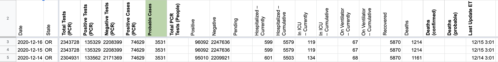
AFTER: 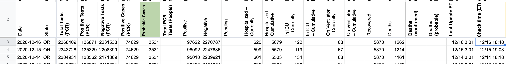
#1015: [OR] Patch 12/15 late update
Issue number 1015
hmhoffman opened this issue on December 16, 2020, 1:32 PM PST
State: OR
Dates affected: 12/15/2020
Describe the issue: On December 15, 2020, Oregon updated their COVID-19 response page after the publish time of our daily update.
Comments
Rows edited: 1 OR 2020-12-15 positive: 96092 (was 95010) negative: 2247636 (was 2209921) hospitalizedCurrently: 599 (was 601) hospitalizedCumulative: 5579 (was 5503) inIcuCurrently: 119 (was 134) onVentilatorCurrently: 67 (was 68) death: 1214 (was 1161) totalTestsViral: 2343728 (was 2304931) positiveTestsViral: 135329 (was 133562) negativeTestsViral: 2208399 (was 2171369) OR 2020-12-15 lastUpdateTime: 2020-12-15 08:01:00+00:00 (was 2020-12-14 08:01:00+00:00)
#1005: [OR] Patching missed updates 12/9-12/10
Issue number 1005
jaclyde opened this issue on December 10, 2020, 5:26 PM PST
Labels Data quality
State: Oregon
Issue: The dashboard we were using for testing, case and hospital metrics did not update before publish time, and the updates were published without all data. On 12/9 we missed the current hospitalization metrics. On 12/10 we missed all testing, case, and hospitalization metrics.
Sources: https://covid-tracking-project-data.s3.us-east-1.amazonaws.com/state_screenshots/OR/OR-quaternary-20201209-235723.png https://covid-tracking-project-data.s3.us-east-1.amazonaws.com/state_screenshots/OR/OR-secondary-20201210-235351.png https://covid-tracking-project-data.s3.us-east-1.amazonaws.com/state_screenshots/OR/OR-tertiary-20201210-235359.png https://covid-tracking-project-data.s3.us-east-1.amazonaws.com/state_screenshots/OR/OR-quaternary-20201210-235407.png
Comments
BEFORE: 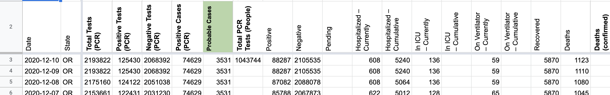
AFTER: 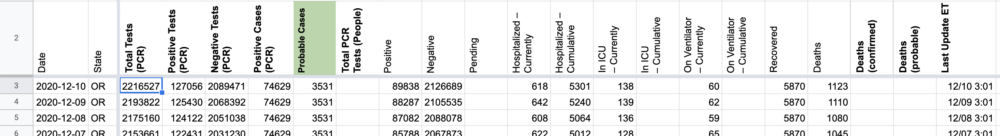
#997: [OR] Switch total tests from Total PCR tests (people) to Total PCR tests (specimens)
Issue number 997
jaclyde opened this issue on December 4, 2020, 3:40 PM PST
Labels Data quality
State: Oregon:
Issue: Oregon has stopped reporting Total, positive, and negative PCR tests (people) and started reporting Total PCR tests (specimens) as well as positive and negative PCR tests (specimens). We hope to get a time series from the state soon to backfill Total PCR tests (specimens
Comments
In addition to backfilling specimens time series, we're also cleaning up the Total PCR Tests (People) field since Oregon stopped reporting it.
Multi-edit tool-PRODUCTION - OR-reb-20201210_cleanup.csv.txt Multi-edit tool-PRODUCTION - OR-reb-20201210_cleanup.post.csv.txt
#982: [OR] Patch 11/26 Negative PCR tests (specimens)
Issue number 982
hmhoffman opened this issue on November 27, 2020, 1:47 PM PST
State: OR
Dates affected: 11/26
Describe the issue: On November 26, 2020, Oregon's Negative PCR tests (specimens) were input as 960,657 based on a number from a press release due to the dashboard not being updated because of the Thanksgiving holiday. On November 27, 2020, the dashboard showed 960,604 negative tests. The decision was made to revert November 26, 2020's Negative PCR tests (specimens) value to 960469, the value shown on our historical screenshots of the dashboard to ensure that our time series was consistent.
Comments
BEFORE: 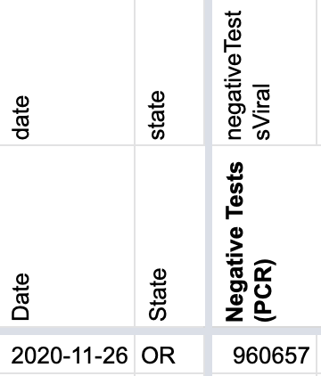
AFTER: 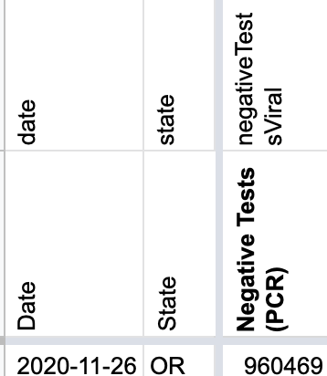
#972: [OR] Patch 11/23 Current hosp, ICU, and vent. metrics
Issue number 972
jaclyde opened this issue on November 24, 2020, 9:38 PM PST
Labels Data quality
State: Oregon
Issue: We missed Oregon's hospital metrics update on 11/23. Patching in the values for Currently hospitalized, in ICU, and on ventilators.
Source: https://covid-tracking-project-data.s3.us-east-1.amazonaws.com/state_screenshots/OR/OR-quaternary-20201124-114151.png
Comments
BEFORE: 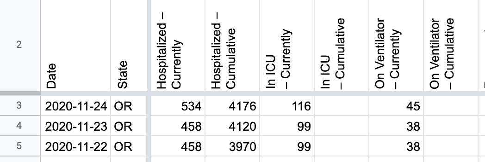
AFTER: 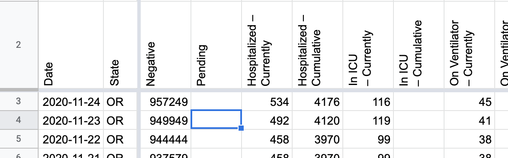
#927: [OR] Remove In ICU – Cumulative value for 4/9
Issue number 927
muamichali opened this issue on November 5, 2020, 4:54 AM PST
Labels Data quality
State or US: Oregon
Describe the problem On 4/9 we recorded a cumulative in ICU value of 69 in Oregon. This seems to be a mistake
Link to data source
Provide links to original data sources that we can refer to, like a state COVID website.

Comments
Updated in batch 466
#893: [OR] Backfill 10/8 Data
Issue number 893
hmhoffman opened this issue on October 9, 2020, 1:07 PM PDT
Labels Backfill Data quality
State: OR
Dates Affected: 10/8
Describe the issue: On 10/8, OR did not update in time for our publish. We should patch data from screencaps.
Links: https://covid-tracking.slack.com/archives/CUQ4MMTPD/p1602196821017200
Comments
Updated most columns from screenshots. Not available in screenshots: Hospitalized - currently, In ICU - currently, and On Ventilator - currently. Maybe for the same reason they updated late, there's no "data report" for 10/8 either, so as far as I know there's no way to recover the current hospitalization metrics.
Note OR isn't providing Recovered so that doesn't change even with normal data entry. Probable cases is calculated by subtracting Positive Cases (PCR) from Positives.
Relevant screenshots:
- https://covidtracking.com/screenshots/OR/OR-20201009-002909.png
- https://covidtracking.com/screenshots/OR/OR-secondary-20201009-002920.png
- https://covidtracking.com/screenshots/OR/OR-tertiary-20201009-002933.png
Before: 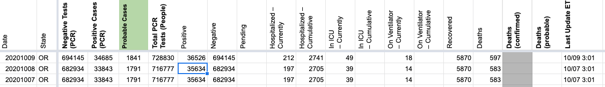
After: 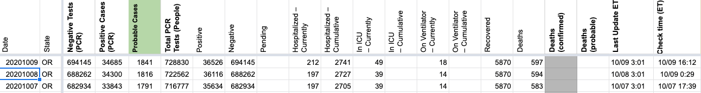
#854: [OR] Probables backfill 5/4 - 7/27 and fixing confirmed case values 6/7, 6/10, 6/21
Issue number 854
the-daniel-lin opened this issue on September 21, 2020, 2:52 PM PDT
Labels Backfill Data quality Historical Data
State or US: Oregon Describe the problem Oregon began to release total ("Total Cases") and confirmed ("Positive Tests") case values on 5/4. On 7/28, CTP began using a total - confirmed calculation to record probable values. We need to backfill these probable values back through 5/4, when OR first released confirmed/total values.
Beginning 6/6, Oregon does not update the confirmed values on their dashboard on weekends, so for those days, we carry over confirmed/probable values. Prior to 6/6, however, Oregon did provide consistent updates on their dashboard through the weekend, so we will not carry over those weekend values. On 7/3 and 9/7, OR did not update their dashboard, so we are carrying over values for those weekdays.
There are errors in Positive Cases (PCR) on 6/7, 6/10, and 6/21. On 6/7 and 6/21, Data Entry recorded the total case value in the Positive Cases (PCR) confirmed column as well. As these are unupdated weekend values, we should change these to the respective carried over values, from 4808 and 6937 to 4442 and 6344. On 6/10, Data Entry did not record the confirmed case value and only recorded the total cases value. We should change this to reflect the screen-captured value, from 5060 to 4907.
Link to data source Using Total-Confirmed calculation and spot checking with screenshots.
6/10: https://covid-tracking-project-data.s3.us-east-1.amazonaws.com/state_screenshots/OR/OR-20200610-184345.png
Comments
Probables BEFORE: 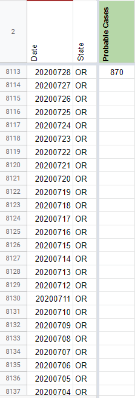 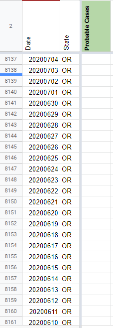 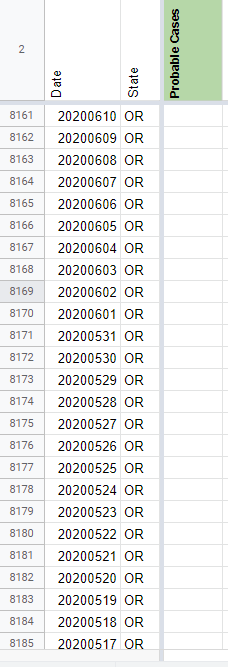 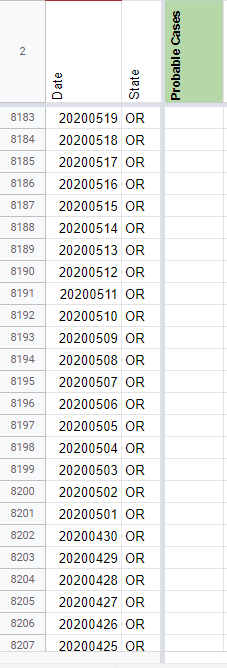
Probables AFTER:
 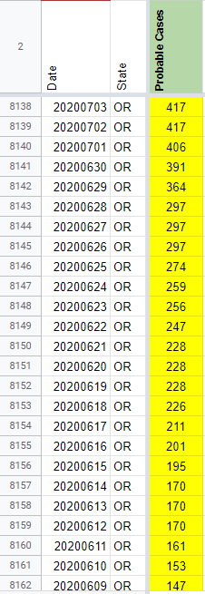
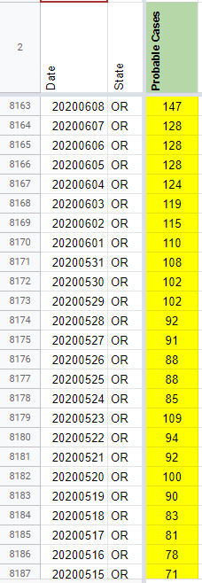
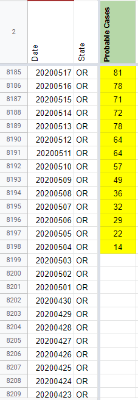
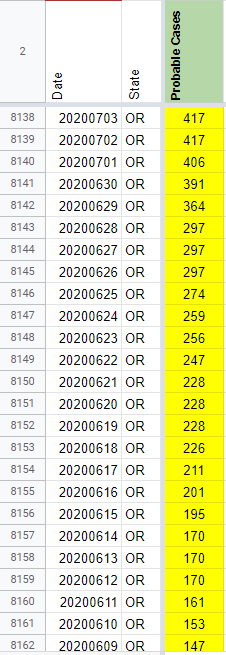
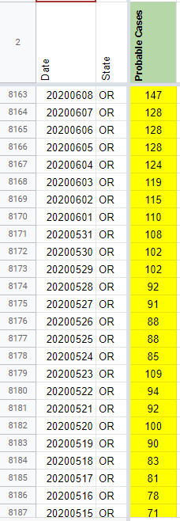
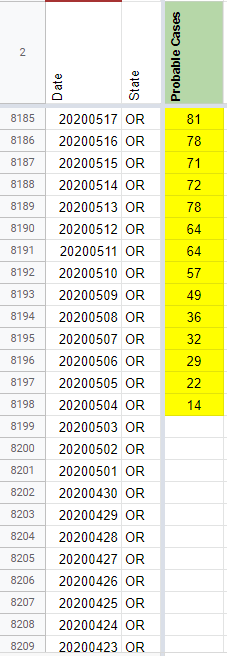
Backfilled values:
848 831 831 831 813 807 784 762 717 717 717 702 675 654 643 573 573 573 556 540 519 493 417 417 417 417 406 391 364 297 297 297 274 259 256 247 228 228 228 226 211 201 195 170 170 170 161 153 147 147 128 128 128 124 119 115 110 108 102 102 92 91 88 88 85 109 94 92 100 90 83 81 78 71 72 78 64 64 57 49 36 32 29 22 14
6/7, 6/10, 6/21 Confirmed Cases BEFORE: 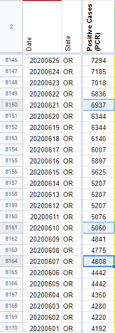
6/7, 6/10, 6/21 Confirmed Cases AFTER: 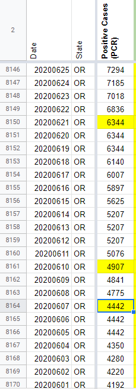
#776: Server CORS (Access-Control-Allow-Origin) header issue
Issue number 776
loglow opened this issue on August 18, 2020, 10:50 PM PDT
Labels Data quality
Describe the problem
The server does not appear to be returning Access-Control-Allow-Origin headers along with API requests.
This results in web browser errors such as:
XMLHttpRequest at 'https://covidtracking.com/api/v1/us/daily.json' from origin 'null' has been blocked by CORS policy: No 'Access-Control-Allow-Origin' header is present on the requested resource.
I believe that the API server should be returning an Access-Control-Allow-Origin: * header, and that this would resolve the problem.
I don't have prior experience with these kinds of issues, so please forgive my ignorance if any of this is incorrect. I only began receiving these errors today for the first time, and I've been using this API for months now. I've temporarily mitigated the problem by routing all API requests through https://cors-anywhere.herokuapp.com/ but this doesn't seem like a great permanent solution.
Thanks for all your time and efforts!
Comments
@kevee can you please transfer to the website repo? 🙏
Well, this just became more urgent because https://cors-anywhere.herokuapp.com/ is now giving me 429 Too Many Requests errors. Please fix ASAP.
Safari flavor of errors below. Above was Chrome.

PS. Firefox 79.0 (latest version) is working because apparently it's not yet strictly enforcing CORS policy.
For the above screenshots:
- Chrome is 84.0.4147.135
- Safari is 13.1.2 (14609.3.5.1.5)
Per our API changelog, please use https://covidtracking.com/api/v1/us/daily.json instead of https://covidtracking.com/api/v1/us/daily.json. The website is doing a 301 redirect to the new API domain, but for some reason Netlify is stripping CORS out from that feedback, so I'll check in with them:
curl -I https://covidtracking.com/api/v1/us/daily.json
HTTP/2 301
content-type: text/plain
location: https://api.covidtracking.com/v1/us/daily.json
Thanks!
#648: [OR] Data update missed on 7/15
Issue number 648
MattHilliard opened this issue on July 19, 2020, 10:12 AM PDT
Labels Data quality
State or US: OR
Describe the problem We didn't get updated numbers on 7/15 for OR, probably because they updated after 5pm.
Link to data source Data report: https://www.oregon.gov/oha/PH/DISEASESCONDITIONS/DISEASESAZ/Emerging%20Respitory%20Infections/Oregon-COVID-19-Update-07-15-2020-FINAL.pdf
Press release (with confirmed + probable cases): https://www.oregon.gov/oha/ERD/Pages/Oregon-reports-282-new-confirmed-and-presumptive-COVID-19-cases-4-new-deaths.aspx
Comments
I was able to update everything except Recovered from the OR data report and press release.
Before: 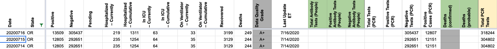
After: 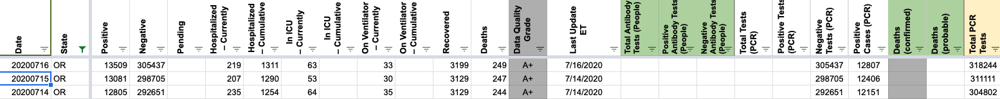
Thanks @MattHilliard !
#638: [OR] Add missing data points via state data reports?
Issue number 638
MattHilliard opened this issue on July 15, 2020, 6:20 PM PDT
Labels Data quality not stale
State or US: OR
Describe the problem We have a fair number of days without new data in various columns for OR. It seems like the "data reports" (below the press releases on the linked page) may allow filling in some of this data but I haven't investigated yet.
Link to data source https://www.oregon.gov/oha/erd/pages/covid-19-news.aspx "Data Reports" section
Comments
I looked at days we had no negative tests and found of the 15 days we don't have an updated data point, 6 of them can be repaired using OR data reports:
No data report available: 7/4, 6/28, 6/26, 6/20 Data reports available: 5/14, 5/12, 4/28, 4/10, 4/4, 4/1 Data report available but no test data: 4/22 Dates preceding data report horizon of 3/26: 3/25, 3/21, 3/14, 3/12
Some of those days have other data missing as well, e.g. positive cases or hospitalization.
Thanks a lot @MattHilliard !!
This issue has been automatically marked as stale because it has not had recent activity. It will be closed if no further activity occurs. Thank you for your contributions!
This issue has been closed because it was stale for 15 days, and there was no further activity on it for 10 days. You can feel free to re-open it if the issue is important, and label it as "not stale."
#631: [OR] 6/15 Incorrect Hospitalization Value
Issue number 631
the-daniel-lin opened this issue on July 15, 2020, 10:25 AM PDT
Labels Data quality Historical Data
"In Oregon the hospital/ICU/Vent counts are missing for Monday 6/15. This is provided (M-F) on Oregon's "Daily Update" PDF. You can get there by using the "Primary Source" you guys already have:
https://govstatus.egov.com/OR-OHA-COVID-19
... then click "+ Additional Data and Projections" ... then click "COVID-19 Daily Update" ... which links to this PDF: https://www.oregon.gov/oha/PH/DISEASESCONDITIONS/DISEASESAZ/Emerging%20Respitory%20Infections/Oregon-COVID-19-Daily-Upda…
THANKS SO MUCH for coordinating this effort! This has been a HUGE help!"
I was unable to find ICU/Vent values from screenshots/wayback, but we do have a screenshot from 6/15 that shows an updated Hospitalization value -- 899 (not 875).

Current CTP Data:

Comments
I'm the original submitter of that support ticket. Here's the Oregon Health Authority's report from that day -- which has all of the values (vent, hospital, icu, etc).
If you don't find that trustworthy, then you can also get that same PDF directly from Oregon Health Authority:
https://www.oregon.gov/oha/PH/DISEASESCONDITIONS/DISEASESAZ/Emerging%20Respitory%20Infections/Oregon-COVID-19-Update-06-15-2020-FINAL.pdf
Thanks for correcting this -- and thanks for the great resource.
@terwilliger42 Thank you so much for reporting this and following up to link to this data. Oregon is a tough state for us to record correctly because of the weekday/weekend reporting differences. Looking at this, I am pretty sure we have other days we can fix with these state reports. I'm not sure if they've always been there and I just hadn't seen them, but I personally have done cleanup work based on their textual press releases; these seem much better. Anyway, I will open a follow-up issue to investigate that possibility. Meanwhile, I've fixed our hospitalization data for 6/15:
Before: 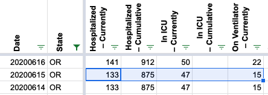
After: 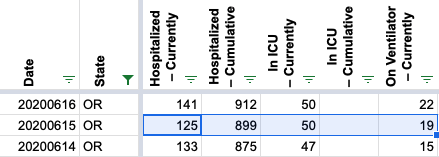
This report can also be used to update our Positive Cases (PCR) and Total PCR Tests columns for 6/15 (previously they were unchanged that day).
Before: 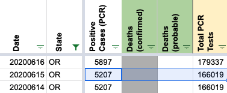
After: 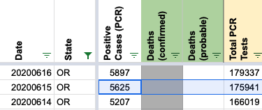
#587: [OR] Wrong values were entered in Negative Tests (PCR) column
Issue number 587
muamichali opened this issue on July 8, 2020, 1:47 PM PDT
Labels Data quality stale
State or US: Oregon
Describe the problem It should not be Dashboard > Negative Tests / WEEKEND use Other link and check most recent press release just WEEKEND use Other link and check most recent press release
Link to data source https://covid-tracking.slack.com/archives/CUQ4MMTPD/p1594239559460200
Comments
@muamichali Was this related to https://github.com/COVID19Tracking/issues/issues/582 or something else? I can't tell based on the description.
This issue has been automatically marked as stale because it has not had recent activity. It will be closed if no further activity occurs. Thank you for your contributions!
This issue has been closed because it was stale for 15 days, and there was no further activity on it for 10 days. You can feel free to re-open it if the issue is important, and label it as "not stale."
#582: [OR] missing data for 7/3, 6/27, 6/13 and 6/14
Issue number 582
MattHilliard opened this issue on July 7, 2020, 5:33 PM PDT
Labels Data quality
State or US: OR
Describe the problem Oregon has a weird system where they have a dashboard on weekdays but also daily press releases that include weekends. Our positive case data wasn't updated on 7/3, 6/27, 6/14 and 6/13, but this information is available from the state's press releases. Testing and deaths should also be re-checked for those days.
Link to data source https://www.oregon.gov/oha/erd/pages/covid-19-news.aspx?wp8888=p:1#g_0569e9ee_0a15_446d_9eb3_197889f78853
Reported via email
Comments
I've patched the historical data. It should be on the site within an hour.
Spreadsheet with analysis, plus before/after copies of States Daily: https://docs.google.com/spreadsheets/d/10zo0XLxh9sEhpBNjUY_6rvlk7ziQcYAQvD3ZTbtXE7A/edit
#556: [OR] PCL Case Historicals in States Daily
Issue number 556
muamichali opened this issue on June 29, 2020, 6:36 AM PDT
Labels PCL/SVP Historicals
State or US: OR
Describe the problem Cases There are some missing values for Positive Cases PCR in States Daily.
Link to data source Found while working on #549
Comments
Hey @muamichali, on May 4th, Oregon started reporting confirmed and presumptive cases. We've removed "Positive Cases (PCR)" from 2020-04-30 and 2020-04-29.
So while it appears there were missing values between 2020-05-01 and 2020-05-02, that is not the case.
BEFORE 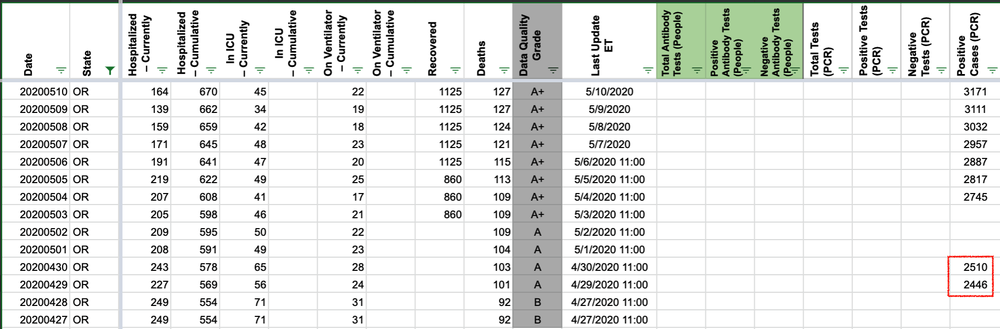
AFTER 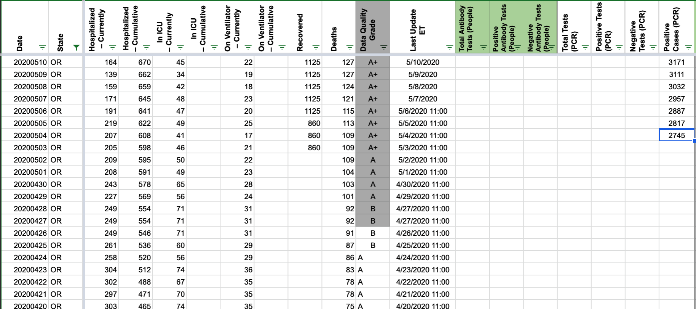
Thanks! Camille
#549: [OR] PCL Historicals and WS2
Issue number 549
pscsharon opened this issue on June 26, 2020, 7:15 AM PDT
Labels PCL/SVP Historicals
Death values are historically recorded in both the "Deaths" and "Deaths (Confirmed)" columns for OR. However, OR’s death values are unclear about what they represent, so they should only be recorded in the main "Deaths" field.
Comments
Added tooltip saying "no data" as well as process note.
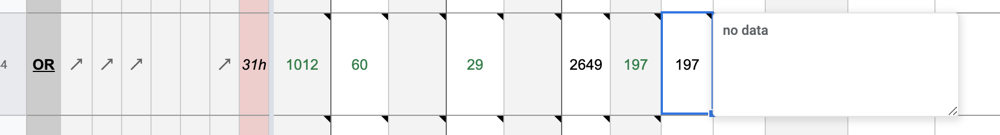Deaths
BEFORE 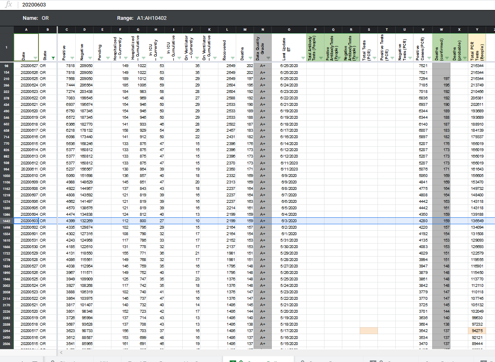
AFTER 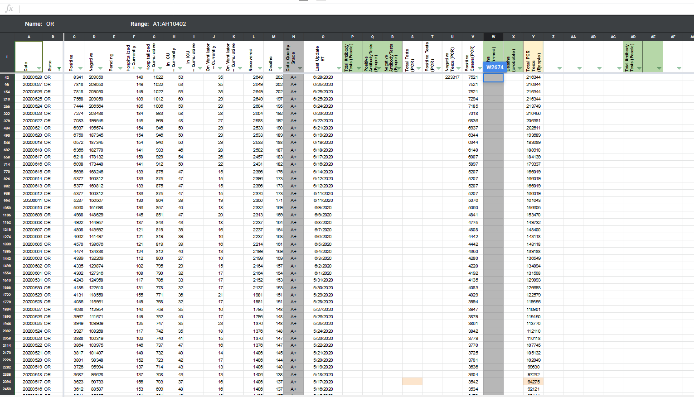
Note: while working on this I found an issue with missing Positive Cases PCR in States Daily and logged in separately. #556
DC'd by JJA
#494: OR: bad data for today?
Issue number 494
adamdavis40208 opened this issue on June 14, 2020, 7:15 PM PDT
I'm using a few fields for a pet project:
deathIncrease
death
positiveIncrease
totalTestResultsIncrease

All of these numbers have generally been populated and accurate, except for today. Just thought I'd drop you a note!
Comments
Hi Adam
If you look at the screenshots on our website https://covidtracking.com/data/state/oregon#historical you will see that Oregon has not been updating the numbers on their dashboard since 6/12. Is this possibly the answer to your question?
Ah. I didn't realize the data source only updated monday-friday
https://govstatus.egov.com/OR-OHA-COVID-19
Data current as of 6/12/2020, 12:01 a.m. Updated Monday - Friday.*
Good to know, sorry for the false alarm!
#62: OR: Incorrect data
Issue number 62
tedder opened this issue on March 26, 2020, 2:53 PM PDT
Labels Data quality stale
Comparing my dataset for Oregon (pulled from the official source) against yours, it looks like 3/25 is missing, causing 3/26 to be wrong.
my cases on 3/24-3/26: 209, 266, 316 my increases: 20, 50, 57 your cases: 209, 209, 327 your increases: 18, 0, 118
This may be because of this issue: https://github.com/COVID19Tracking/covid-tracking-api/issues/22
Spotchecking the 'positive' counts, they are correct except for 3/25, 3/21, and everything before about 3/19. Most of the older ones are a date-off-by-one error.
I wouldn't mind being invited to the Slack, if possible. I'm trying to replace my OR and FL datasets with yours to generate some graphs on Wikipedia.
Comments
Unfortunately, I am not seeing a screen-capture of historical data, so all I have is a copy of the data we have collected:
-
[ ] Data collection log:

-
[ ] Daily Report (cut off at 4pm)

The same is happening between 4/8 and 4/11 for positives and deaths. Other columns are most likely effected too but unable to verify the correct values. #135
This issue has been automatically marked as stale because it has not had recent activity. It will be closed if no further activity occurs. Thank you for your contributions!
This issue has been closed because it was stale for 15 days, and there was no further activity on it for 10 days. You can feel free to re-open it if the issue is important, and label it as "not stale."
Rows edited: 1 OR 2020-12-01 hospitalizedCurrently: 662 (was 584) inIcuCurrently: 127 (was 117) onVentilatorCurrently: 58 (was 50)